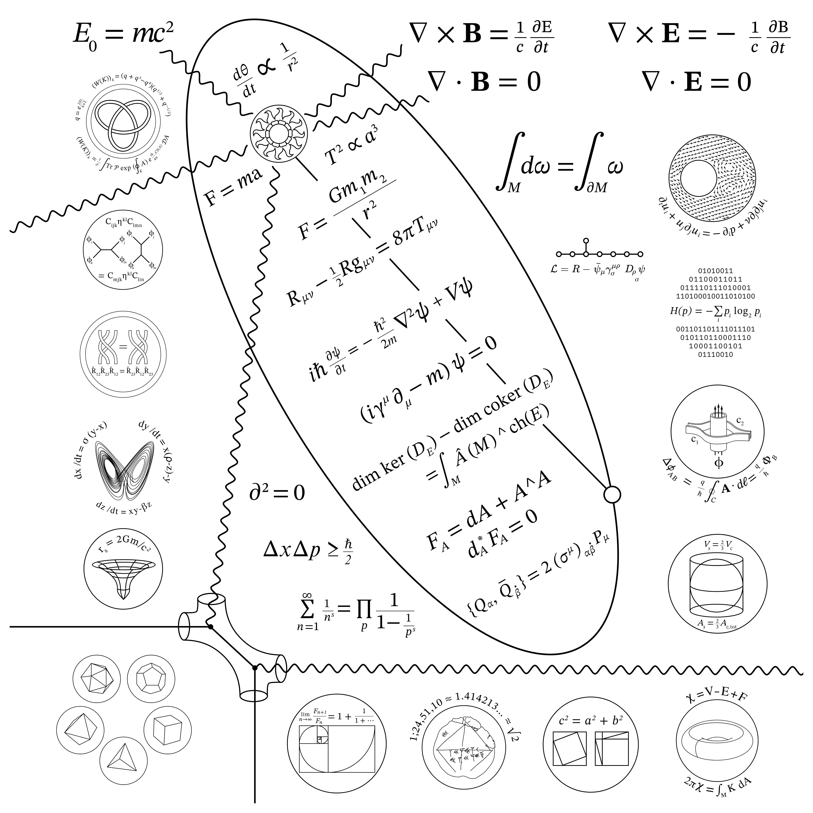
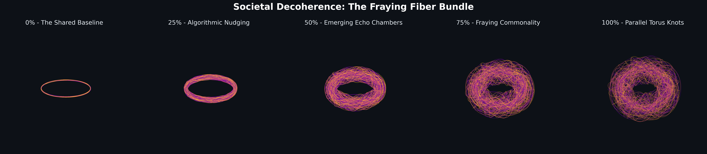
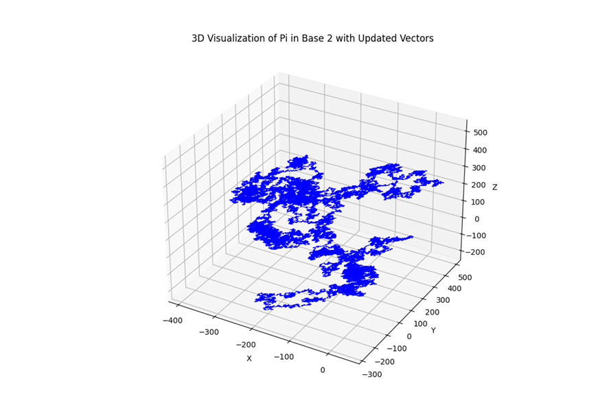

Mister
Consistency
One roof for a year of side quests: songs made on Suno, a stone wall of equations redrawn line by line, doughnuts that explain why we can't talk to each other anymore, and a couple of papers that got out of hand. Named after the song. Ironically.
Music
Made on Suno under the handle @coultron. Country ballads, gangsta rap about your internet history, and one rawstyle track about time travel — consistency was never the point of the music.
Full catalogue → suno.com/@coultron
The Iconic Wall
The Iconic Wall at the Simons Center for Geometry and Physics (Stony Brook) carves the milestone equations of mathematics and physics into a single two-story stone relief. This project is a faithful vector reconstruction of the wall — every equation, knot, torus, and Dynkin diagram redrawn as clean line art — prepared for fabrication as laser-etched stainless steel panels.



Topology of Societal Decoherence
An academic fine-art piece. Society's shared conversation is modeled as a fiber bundle on a torus: when we agree on what words mean, the fibers wind together into one coherent surface. As algorithmic feeds nudge language apart, the bundle frays — until left and right occupy parallel torus knots that never intersect. The stages below are driven by real linguistic data: the shared feasible space of political language, 1994 → 2023.


Research
Longer-form studies and one working data venture. The PDFs open in the browser.
Gold's Rally: A Topological Contextualization
Gold ran to $5,500/oz in late 2025 — anomaly or repricing? Persistent homology of cross-asset correlation structure says the market's wiring is normal (43rd percentile) even as price momentum hit the 100th. Extreme move, intact topology: a secular revaluation of gold against fiat, not a dislocation. January 2026, 12 pages.
Read the studyInformation Activation Theory (IAT)
A scalar-field effective action for the dark sector, built on the postulate that information carries a physical accounting. A dimensionless activation field ψ interpolates between noise-like and structured degrees of freedom, with parameter regimes recovering cold-dark-matter and fuzzy-dark-matter behavior — and the Hubble tension treated as a falsifiable target, not a settled claim.
Read the manuscriptPalladium Data
The Shannon obsession, put to work. Pre-training corpora filtered by information density — compression ratio as an entropy proxy, crossed with linguistic sophistication — keeping only the "Goldilocks Zone" of the open web. Result: 17% lower training loss than FineWeb at an identical compute budget.
palladiumtrain.com ↗Curiosities
Things that didn't need a reason.

The Story of Gwen & Bill
A "complete the story" exercise designed to draw out frontier-model biases. Four models — ChatGPT, Claude, Gemini, and Grok — were each handed the same unfinished story: a 1940s Tulsa chemical engineer, his beautiful wife, and a lifetime of magazine cutouts. Each model finished it once a year ago, and again today. Same prompt, eight endings. Make of it what you will.
Read all the endings